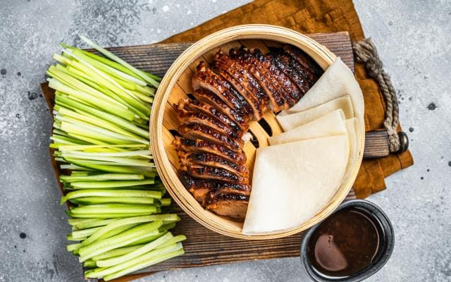

Iedereen heeft al wel gehoord van China, het is een groot land gelegen in Oost-Azië.
China is door de jaren heen één van de bekendste landen geworden.
Dit is niet zomaar gebeurd. China heeft al veel prestaties behaald die hiertoe hebben geleid.
Hier zijn een paar van die prestaties opgesomd:
Enkele prestaties van China
China is het tweede meest bevolkte land met wel 1,41 miljard inwoners.
China is een leider in de productie van "new energy vehicles".
China is in enkele tientallen jaren uitgegroeid tot een van de grootste economieën ter wereld.
China is niet alleen bekend om zijn prestaties, maar ook om zijn mooie toeristische plekken en cultuur, waaronder eten en kleding.
Op deze site leer je over een aantal mooie plaatsen in China die je zeker moet bezoeken en over Chinese gerechten en eetgewoontes.
3 onweerstaanbare Chinese gerechten
Chinese eten verschilt veel van Westerse eten: de kruiden, kookstijl en manier van eten verschillen.
Als je naar China gaat en de Chinese cultuur wilt ervaren, raad ik aan om te leren eten met "chopsticks".
Een aantal gerechten die je moet proberen zijn:

Pekingeend 北京烤鸭
Pekingeend is beroemd om zijn zeer krokante huid, geserveerd met dunne pannenkoekjes, hoisinsaus, lente-ui en komkommer.
Dim Sum 点心
Dim sum is een brede selectie van kleine hapjes, variërend van gestoomde dumplings tot loempia's, traditioneel geserveerd bij de thee.
Kung Pao Kip 宫保鸡丁
Kung Pao Kip is een Sichuan-klassieker bestaande uit blokjes kip, pinda's, groenten en chilipepers, bekend om de pittige en licht zoetzure smaak.
Ontdek China
China is een land vol cultuur, geschiedenis en heerlijke gerechten.
Van indrukwekkende prestaties tot prachtige toeristische plekken en unieke smaken,
er is voor iedereen iets te ontdekken.
Ik hoop dat deze pagina je inspireert om zelf meer over China te leren en misschien ooit te bezoeken!